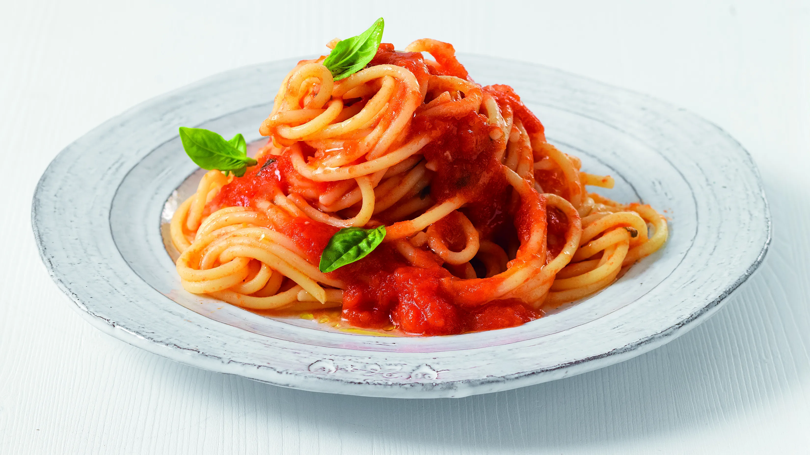

PENNE AL POMODORO
Ingredienti
Di seguito riportiamo gli ingredienti per preparare il nostro piatto
- 400g penne rigate
- Passata di pomodoro
- Olio, basilico, aglio
- 100g di parmigiano grattuggiato
Preparazione
- Soffrigere in una padella l'aglio aggiungendo l'olio
- Versa la passata di pomodoro, condisci con un pizzico di sale e fai cuocere per 15-20 minuti rigirando ogni tanto.
- Scolare la pasta e saltarla in padella
- Versare il condimento sulla pasta,saltandola
- Distribuisci la pasta nei piatti individuali, decora con il basilico e servi ben calda